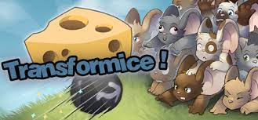
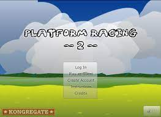

Transformice
Transformice is an online independent multiplayer free-to-play platform video game, created by French game designers, known by their aliases Melibellule and Tigrounette.

Platform Racing 2
Platform Racing 2 (commonly abbreviated PR2) is a 2008 online multiplayer racing Flash game that was developed by Jacob Grahn.
The game went on to become his most successful project, receiving over 33 million plays on Kongregate alone and becoming one of the most popular independent online Flash games of all time when it was released, having 2 thousand people online simultaneously at its peak.

Super Smash Flash 2
Super Smash Flash 2, commonly abbreviated as SSF2, is a periodically-released nonprofit Flash fighting fan game developed by the Super Smash Flash 2 Team, led by Gregory Cleod9 McLeod, and published by McLeodGaming. Although initially referred to as a sequel, Super Smash Flash 2 is a reboot of the critically received fan game Super Smash Flash.